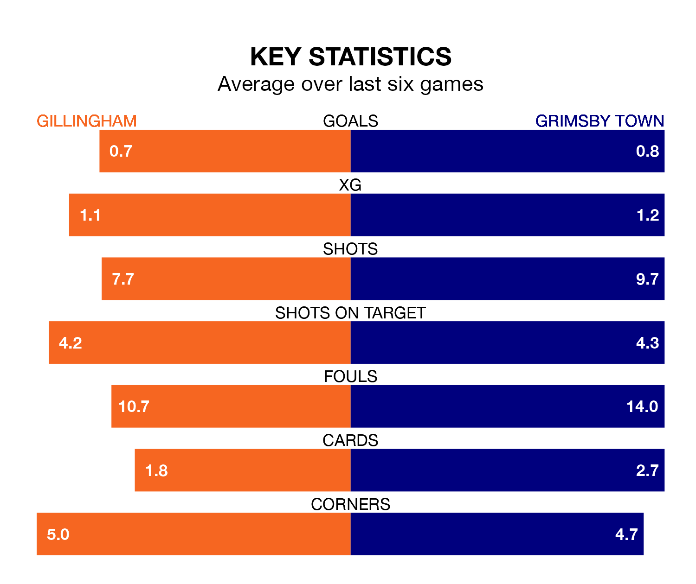

Struggling Grimsby Town face Gillingham away at the MEMS Priestfield Stadium on Saturday looking to build on a win in their last league outing.
After securing all three points with a 1-0 victory over Milton Keynes Dons on Tuesday, the Mariners sit 21st in EFL League Two.
They travel to play a Gillingham side 10th in the standings, who lost in their last match, 2-0 against AFC Wimbledon.
In Jake Turner, Gillingham can rely on one of the league's safest pair of hands. He has kept 11 clean sheets in his 33 appearances this season in EFL League Two.
In Grimsby's net, Harvey Cartwright has five clean sheets in 21 games. He has conceded a goal every 56 minutes, 40% more often than the 78 minutes between goals for Turner.
With 35 goals in 38 games so far this season, the Gills are the league's lowest scorers with 0.9 goals per game. But they are conceding fewer than average too, letting in 44 goals at a rate of 1.2 per game.
Town are also below average scorers, with 1.3 goals per game, compared to a league average of 1.5. They have conceded 1.7 goals per game.
In the last three years, Gillingham and Grimsby have played each other on three occasions. They won one each, and they drew once.
Their last meeting was on September 2, when Grimsby won 2-0 at home.
The hosts are in mixed form in EFL League Two, with two wins and two draws from their last six games.
With two wins and three draws over that period, the Mariners' form is slightly better – they have taken nine points from 18, compared to Gillingham's eight.
Updated: 15:10 (UTC), 15/03/24